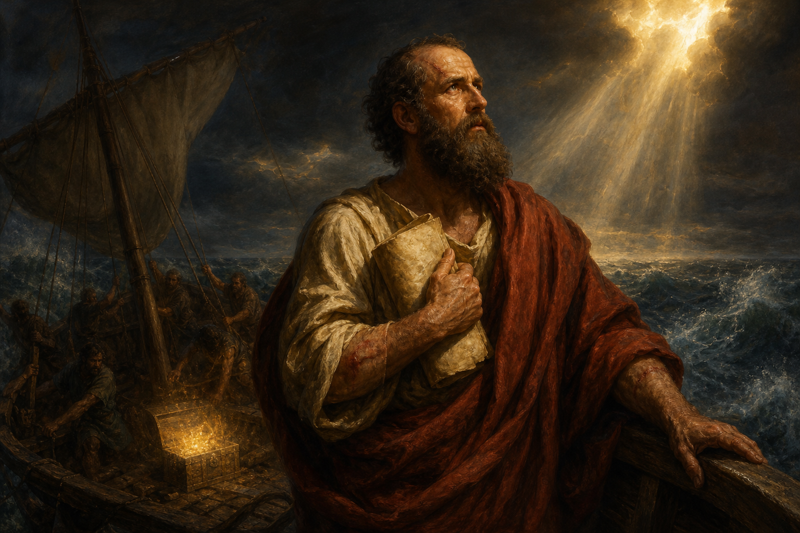

New Testament · Book 8 of 27
2 Corinthians
Paul defends his apostleship and bares his own weakness, showing a church that questioned him how God's power is made perfect in suffering.
Written after a painful visit and a severe letter now lost to us, Paul's most emotionally transparent epistle reconciles with the Corinthians while defending his ministry against rival teachers who questioned his authority.
We have this treasure in earthen vessels, that the excellency of the power may be of God, and not of us.
What happens in 2 Corinthians
Paul opens by explaining why he changed his travel plans and why he wrote a tearful, severe letter, expressing relief that it produced godly sorrow and repentance rather than lasting harm. He describes the ministry of the new covenant as one carried in weak, fragile vessels so that its power is unmistakably God's own, and reflects on the hope of a resurrection body that makes present suffering bearable. Two chapters are devoted to encouraging a generous offering for the poor believers in Jerusalem, holding up the example of the Macedonian churches who gave beyond their means. The letter's final section turns sharply as Paul defends his apostolic authority against false teachers who have infiltrated the church, reluctantly boasting of his sufferings, visions, and a thorn in the flesh that kept him dependent on grace, concluding that God's strength is made perfect in weakness.
Why it matters
2 Corinthians offers the most intimate look at Paul's own heart and struggles found anywhere in his letters, modeling how to lead through weakness rather than despite it. Its teaching on generous giving and on finding strength in weakness continues to shape how churches think about hardship, ministry, and sacrifice.